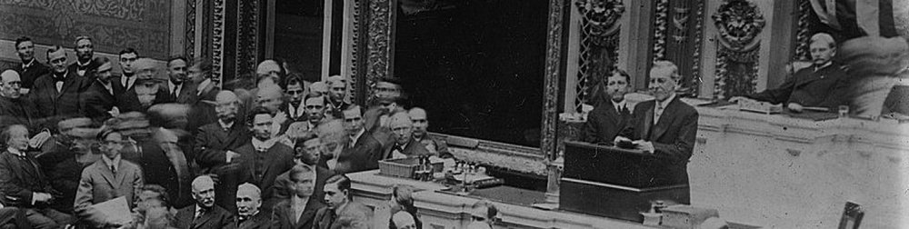

The second case-study involves exploring the State of the Union Addresses that the president of the United States delivers annually since 1790. Each of these speeches seeks to set the political agenda.
As an illustration, please read the text included in the link below that records the address that Woodrow Wilson gave in December of 1913:
State of the Union Presidential Address - Woodrow Wilson - December 2, 1913

The full corpus contains 235 texts (speeches; with a total of almost 1.7 million words) and constitutes an important source of information about the US political agenda and the wider socio-economic and cultural context surrounding them. This information has been gathered together into a .csv file that looks like Figure 1 below. Instead of columns, comma-separate (.csv) files separate the different pieces of information using commas as delimiters: name of the president delivering the speech (President), the year the speech was delivered (Year), the title of the speech (Title) and the (whole) text of the speech itself (Text). The first row displays the name of these variables and the remaining rows are devoted to each observation (speech) in the dataset.
Computational text analysis can provide important insights about the contents of these speeches, including how they have changed over time or how they differ between Democrat and Republican presidents. What kind of words are used more often: “war” or “peace”, “justice” or “freedom”? Is education an important topic in these speeches? What about the economy (“business”, “debt”, “dollar”)? Which locations (including countries) are mentioned more often? Are women present in these speeches? What is the context in which these terms appear?